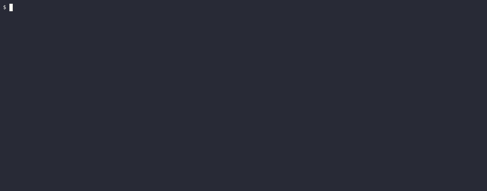
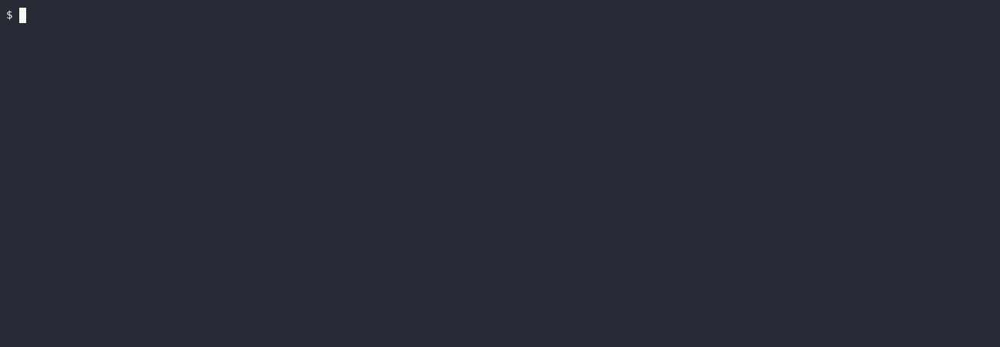

Quickstart
Adding Cucumber to a project requires some groundwork. Cucumber tests are run along with other tests via cargo test, but rely on .feature files corresponding to the given test, as well as a set of step matchers (described in code) corresponding to the steps in those .feature files.
To start, let's create a directory called tests/ in the root of the project and add a file to represent the test target (in this walkthrough it's example.rs).
Add this to Cargo.toml:
[dev-dependencies]
cucumber = "0.20"
futures = "0.3"
[[test]]
name = "example" # this should be the same as the filename of your test target
harness = false # allows Cucumber to print output instead of libtest
At this point, while it won't do anything, it should successfully run cargo test --test example without errors, as long as the example.rs file has at least a main() function defined.
Now, let's create a directory to store .feature files somewhere in the project (in this walkthrough it's tests/features/book/quickstart/ directory), and put a .feature file there (such as simple.feature). It should contain a Gherkin spec for the scenario we want to test. Here's a very simple example:
Feature: Animal feature
Scenario: If we feed a hungry cat it will no longer be hungry
Given a hungry cat
When I feed the cat
Then the cat is not hungry
To relate the text of the .feature file with the actual tests we would need a World object, holding a state that is newly created for each scenario and is changing as Cucumber goes through each step of that scenario.
To enable testing of our simple.feature, let's add this code to example.rs:
extern crate cucumber; extern crate futures; use cucumber::{World, given}; // These `Cat` definitions would normally be inside your project's code, // not test code, but we create them here for the show case. #[derive(Debug, Default)] struct Cat { pub hungry: bool, } impl Cat { fn feed(&mut self) { self.hungry = false; } } // `World` is your shared, likely mutable state. // Cucumber constructs it via `Default::default()` for each scenario. #[derive(Debug, Default, World)] pub struct AnimalWorld { cat: Cat, } // Steps are defined with `given`, `when` and `then` attributes. #[given("a hungry cat")] fn hungry_cat(world: &mut AnimalWorld) { world.cat.hungry = true; } // This runs before everything else, so you can set up things here. fn main() { // You may choose any executor you like (`tokio`, `async-std`, etc.). // You may even have an `async` main, it doesn't matter. The point is that // Cucumber is composable. :) futures::executor::block_on(AnimalWorld::run( "tests/features/book/quickstart/simple.feature", )); }
TIP: Using
Default::default()for constructing aWorldobject may be not enough. In such case a custom constructor may be specified via#[world(init = my_constructor)]attribute.extern crate cucumber; use cucumber::World; #[derive(Debug)] struct Cat { pub hungry: bool, } #[derive(Debug, World)] // Accepts both sync/async and fallible/infallible functions. #[world(init = Self::new)] pub struct AnimalWorld { cat: Cat, } impl AnimalWorld { fn new() -> Self { Self { cat: Cat { hungry: true } } } } fn main() {}
If we run this, we should see an output like this:

A checkmark ✔ next to the Given a hungry cat step means that it has been matched, executed and passed.
But then, for the next When I feed the cat step there is a question mark ?, meaning that we have nothing in our tests matching this sentence. The remaining steps in the scenario are not looked and run at all, since they depend on the skipped one.
There are 3 types of steps:
given: for defining scenario starting conditions and often initializing the data in theWorld;when: for events or actions triggering the tested changes in theWorldrepresenting the scenario;then: to validate that theWorldhas changed in the way expected by the scenario.
These various step matching functions are executed to transform the World. As such, mutable reference to the world must always be passed in. The Step itself is also made available.
NOTE: Unlike official Cucumber implementation the
cucumbercrate makes explicit separation betweengiven,whenandthensteps. This allows to prevent ambiguity problems when running tests (i.e. to avoid accidental uses of athenstep as agivenone). To remain compliant with existing scenarios abusing this, it will be enough to place multiple attributes on the same step matching function.
We can add a when step matcher:
extern crate cucumber; extern crate futures; use cucumber::{World, given, when}; #[derive(Debug, Default)] struct Cat { pub hungry: bool, } impl Cat { fn feed(&mut self) { self.hungry = false; } } #[derive(Debug, Default, World)] pub struct AnimalWorld { cat: Cat, } #[given("a hungry cat")] fn hungry_cat(world: &mut AnimalWorld) { world.cat.hungry = true; } // Don't forget to additionally `use cucumber::when;`. #[when("I feed the cat")] fn feed_cat(world: &mut AnimalWorld) { world.cat.feed(); } fn main() { futures::executor::block_on(AnimalWorld::run( "tests/features/book/quickstart/simple.feature", )); }
Once we run the tests again, we see that two lines are green now and the next one is marked as not yet implemented:
Finally, how do we check our result? We expect that this will cause some change in the cat and that the cat will no longer be hungry since it has been fed. The then step matcher follows to assert this, as our feature says:
extern crate cucumber; extern crate futures; use cucumber::{World, given, then, when}; #[derive(Debug, Default)] struct Cat { pub hungry: bool, } impl Cat { fn feed(&mut self) { self.hungry = false; } } #[derive(Debug, Default, World)] pub struct AnimalWorld { cat: Cat, } #[given("a hungry cat")] fn hungry_cat(world: &mut AnimalWorld) { world.cat.hungry = true; } #[when("I feed the cat")] fn feed_cat(world: &mut AnimalWorld) { world.cat.feed(); } // Don't forget to additionally `use cucumber::then;`. #[then("the cat is not hungry")] fn cat_is_fed(world: &mut AnimalWorld) { assert!(!world.cat.hungry); } fn main() { futures::executor::block_on(AnimalWorld::run( "tests/features/book/quickstart/simple.feature", )); }
Once we run the tests, now we see all steps being accounted for and the whole scenario passing:

TIP: In addition to assertions, we may also return a
Result<()>from a step matching function. ReturningErrwill cause the step to fail. This lets using the?operator for more concise step implementations just like in unit tests.
To assure that assertion is indeed happening, let's reverse it temporarily:
extern crate cucumber; extern crate futures; use cucumber::{World, given, then, when}; #[derive(Debug, Default)] struct Cat { pub hungry: bool, } impl Cat { fn feed(&mut self) { self.hungry = false; } } #[derive(Debug, Default, World)] pub struct AnimalWorld { cat: Cat, } #[given("a hungry cat")] fn hungry_cat(world: &mut AnimalWorld) { world.cat.hungry = true; } #[when("I feed the cat")] fn feed_cat(world: &mut AnimalWorld) { world.cat.feed(); } #[then("the cat is not hungry")] fn cat_is_fed(world: &mut AnimalWorld) { assert!(world.cat.hungry); } fn main() { futures::executor::block_on(AnimalWorld::run( "tests/features/book/quickstart/simple.feature", )); }
And see the test failing:

TIP: By default, unlike unit tests, failed steps don't terminate the execution instantly, and the whole test suite is executed regardless of them. Use
--fail-fastCLI option to stop execution on first failure.
What if we also want to validate that even if the cat was never hungry to begin with, it won't end up hungry after it was fed? So, we may add another scenario, that looks quite similar (let's put it into a separate concurrent.feature):
Feature: Animal feature
Scenario: If we feed a hungry cat it will no longer be hungry
Given a hungry cat
When I feed the cat
Then the cat is not hungry
Scenario: If we feed a satiated cat it will not become hungry
Given a satiated cat
When I feed the cat
Then the cat is not hungry
The only thing that is different is the Given step. But we don't have to write a new matcher here! We can leverage regex support:
extern crate cucumber; extern crate futures; use cucumber::{World, given, then, when}; #[derive(Debug, Default)] struct Cat { pub hungry: bool, } impl Cat { fn feed(&mut self) { self.hungry = false; } } #[derive(Debug, Default, World)] pub struct AnimalWorld { cat: Cat, } #[given(regex = r"^a (hungry|satiated) cat$")] fn hungry_cat(world: &mut AnimalWorld, state: String) { match state.as_str() { "hungry" => world.cat.hungry = true, "satiated" => world.cat.hungry = false, _ => unreachable!(), } } #[when("I feed the cat")] fn feed_cat(world: &mut AnimalWorld) { world.cat.feed(); } #[then("the cat is not hungry")] fn cat_is_fed(world: &mut AnimalWorld) { assert!(!world.cat.hungry); } fn main() { futures::executor::block_on(AnimalWorld::run( "tests/features/book/quickstart/concurrent.feature", )); }
NOTE: We surround the regex with
^..$to ensure an exact match. This is much more useful when adding more and more steps, so they won't accidentally interfere with each other.
Cucumber will reuse these step matchers:

NOTE: Captured values are bold to indicate which part of a step is actually captured.
Alternatively, we also may use Cucumber Expressions for the same purpose (less powerful, but much more readable):
extern crate cucumber; extern crate futures; use cucumber::{World, given, then, when}; #[derive(Debug, Default)] struct Cat { pub hungry: bool, } impl Cat { fn feed(&mut self) { self.hungry = false; } } #[derive(Debug, Default, World)] pub struct AnimalWorld { cat: Cat, } #[given(expr = "a {word} cat")] fn hungry_cat(world: &mut AnimalWorld, state: String) { match state.as_str() { "hungry" => world.cat.hungry = true, "satiated" => world.cat.hungry = false, s => panic!("expected 'hungry' or 'satiated', found: {s}"), } } #[when("I feed the cat")] fn feed_cat(world: &mut AnimalWorld) { world.cat.feed(); } #[then("the cat is not hungry")] fn cat_is_fed(world: &mut AnimalWorld) { assert!(!world.cat.hungry); } fn main() { futures::executor::block_on(AnimalWorld::run( "tests/features/book/quickstart/concurrent.feature", )); }
A contrived example, but it demonstrates that steps can be reused as long as they are sufficiently precise in both their description and implementation. If, for example, the wording for our Then step was The cat is no longer hungry, it would imply something about the expected initial state, when that is not the purpose of a Then step, but rather of the Given step.
Asyncness
async execution is supported naturally.
Let's switch our runtime to tokio:
[dev-dependencies]
cucumber = "0.20"
tokio = { version = "1.10", features = ["macros", "rt-multi-thread", "time"] }
[[test]]
name = "example" # this should be the same as the filename of your test target
harness = false # allows Cucumber to print output instead of libtest
And, simply sleep on each step to test the async support (in the real world, of course, there will be web/database requests, etc.):
extern crate cucumber; extern crate tokio; use std::time::Duration; use cucumber::{World, given, then, when}; use tokio::time::sleep; #[derive(Debug, Default)] struct Cat { pub hungry: bool, } impl Cat { fn feed(&mut self) { self.hungry = false; } } #[derive(Debug, Default, World)] pub struct AnimalWorld { cat: Cat, } // Don't forget to additionally `use tokio::time::{sleep, Duration};`. #[given(regex = r"^a (hungry|satiated) cat$")] async fn hungry_cat(world: &mut AnimalWorld, state: String) { sleep(Duration::from_secs(2)).await; match state.as_str() { "hungry" => world.cat.hungry = true, "satiated" => world.cat.hungry = false, _ => unreachable!(), } } #[when("I feed the cat")] async fn feed_cat(world: &mut AnimalWorld) { sleep(Duration::from_secs(2)).await; world.cat.feed(); } #[then("the cat is not hungry")] async fn cat_is_fed(world: &mut AnimalWorld) { sleep(Duration::from_secs(2)).await; assert!(!world.cat.hungry); } #[tokio::main] async fn main() { AnimalWorld::run("tests/features/book/quickstart/concurrent.feature").await; }

Hm, it looks like the runtime waited only for the first Feature, while the second was printed instantly. What's going on? ü§î
By default, Cucumber executes scenarios concurrently! That means that runtime actually did wait for all the steps, but overlapped! This allows us to execute tests much faster!
If for some reason we don't want to run scenarios concurrently, we may use @serial tag on them:
Feature: Animal feature
@serial
Scenario: If we feed a hungry cat it will no longer be hungry
Given a hungry cat
When I feed the cat
Then the cat is not hungry
@serial
Scenario: If we feed a satiated cat it will not become hungry
Given a satiated cat
When I feed the cat
Then the cat is not hungry

NOTE: Any scenario marked with
@serialtag will be executed in isolation, ensuring that there are no other scenarios running concurrently at the moment.
TIP: To run the whole test suite serially, consider using
--concurrency=1CLI option, rather than marking evey single feature with a@serialtag.